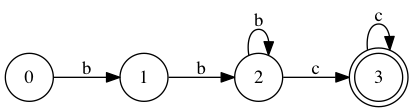
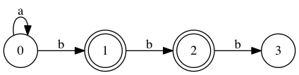

Ehren Murdick
@rubyprogrammer
github.com/ehrenmurdick
a sequence of characters that define a search pattern, mainly for use in pattern matching with strings, or string matching, i.e. "find and replace"-like operationsn
"foobar"
/b.r/
To provide a problem so interesting and difficult that the target is compelled to cease whatever they are doing (eating, reading, walking) in order to think about it
| /a../ | /.bc/ | "abc" |
| /a../ | /a+c/ | "aac" |
| /a*b{1, 2}/ | /b{2,}c+/ | "bbc" |
/b{2,}c+/
/a*b{1, 2}/
/b{2,}c+/
/a*b{1, 2}/
/bbc/